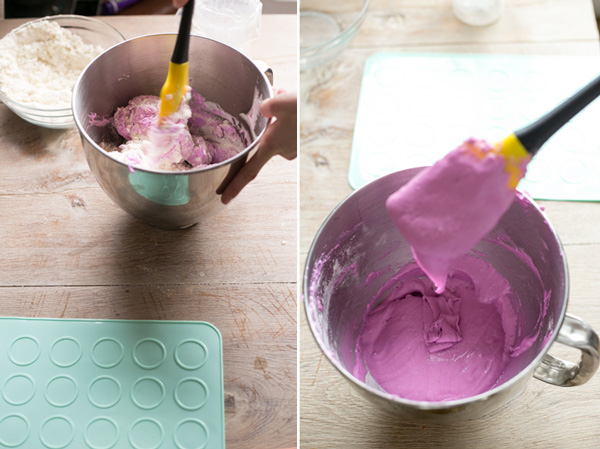
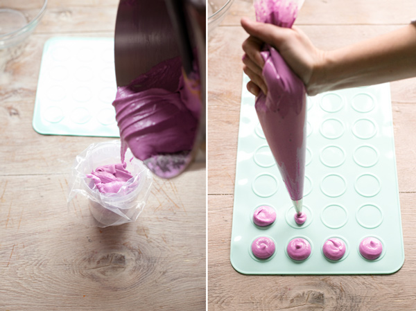
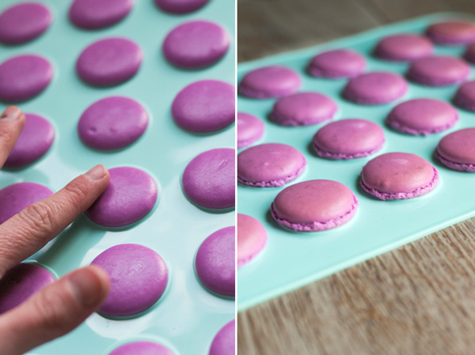
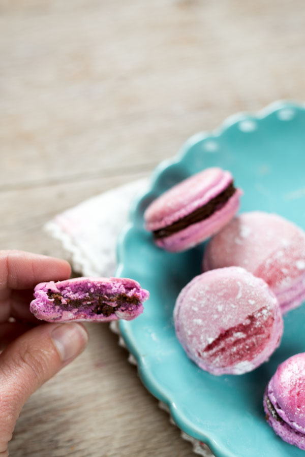

Receta de Macaroons
Ingredientes:
- 110 g de harina de almendras (o almendra molida)
- 220 g de azúcar glas
- 110 g de claras de huevo envejecidas (deben pasar al menos una noche a temperatura ambiente tapadas con papel film)
- 30 g de azúcar blanquilla
- Colorantes en gel
Pasos a seguir:
- Tamizamos la harina de almendras junto con el azúcar glas, repetimos el proceso unas tres o cuatro veces, si tenemos robot de cocina con accesorio picador también podemos utilizarlo antes de tamizar (si lo utilizásemos, sólo tendríamos que tamizar una o dos veces). Reservamos.
- En nuestro robot de cocina con el accesorio de varillas batimos las claras envejecidas a velocidad máxima (como os he indicado en los ingredientes, para envejecer las claras tenéis que dejarlas fuera de la nevera durante toda la noche a temperatura ambiente en un bol tapado con papel film). Cuando empiece a salir espuma añadimos los 30 g de azúcar blanco.
- Seguimos batiendo a velocidad máxima. Cuando estén a punto de montarse las claras le añadiremos el colorante en gel, la cantidad dependerá del tono que queramos conseguir, tened en cuenta que el color siempre bajará un poquito al hornear. Seguimos batiendo hasta que las claras estén montadas, lo sabremos porque se quedan dentro de las varillas y se forman unos piquitos al batir.
- Ahora pasamos a uno de los puntos clave de nuestros macarons: el macaronage si no hacemos bien este paso podemos estropear nuestros macarons. Así que tomad nota: en el mismo cuenco del robot añadimos la mitad de la mezcla de las almendras + azúcar glas y mezclamos con una espátula grande. Integramos con movimientos envolventes, veréis que las claras empezarán a bajarse, no os preocupéis, vamos bien. Cuando esté integrado (no hace falta que esté perfectamente integrado), añadimos la otra mitad y seguimos envolviendo nuestra mezcla. Apretamos con la espátula las paredes del bol para aplastar los grumos de almendra y seguimos envolviendo y envolviendo.
- Es en este momento en el que debemos tener sumo cuidado, no nos debemos pasar de mezclado pero tampoco debemos quedarnos cortos, es decir, si al coger un poco de mezcla con la espátula ésta cae como si formara una cinta (ver la foto de abajo), entonces está perfecto. Éste es el llamado punto de cinta. Es mejor quedarse un poco corto que pasarse de cinta. Si nos pasamos quedará una mezcla demasiado líquida y no saldrán los macarons.
- 
- Pasamos la mezcla a nuestra manga pastelera con una boquilla del nº10 y formamos los famosos macarons. Es importante que tengan todos el mismo tamaño y para ello utilizaremos un tapete para macarons. Apretamos la manga poniéndola perpendicular a la superficie de trabajo y presionamos sin moverla hasta que se forme una bola casi del mismo tamaño que la plantilla del tapete (dejaremos un pequeño margen pues luego la mezcla se expande).
- Cuando ya los tenemos todos hechos ponemos el tapete sobre una bandeja de horno y le damos unos golpes por la parte de abajo para que las burbujas que se hayan formado salgan a la superficie.
- 
- Dejamos secar a temperatura ambiente hasta que la capa de arriba quede seca y lisa (no presionéis demasiado porque se romperán). El tiempo puede depender de muchísimos factores, en invierno en Barcelona por ejemplo pueden tardar hasta tres horas en secarse, en cambio un día de calor pueden tardar 20 minutos. Id probando.
- 
- Una vez esté seca la superficie encendemos el horno a 150ºC. Cuando esté caliente los ponemos en el centro del horno con calor arriba y abajo (mejor sin aire) y horneamos unos 13 minutos. Ojo porque aquí debéis ir controlando vuestros tiempos, cada horno es un mundo. A mitad de horneado abrimos la puerta del horno para dejar salir el vapor. Si veis que se os tuestan por la parte de arriba demasiado entonces debéis bajar un poco la temperatura y viceversa. Los macarons deben tener un pie (es la parte esponjosa que aparece, éste sube durante el horneado y no debe bajar, cosa que a veces inevitablemente pasará mientras hagamos prácticas). Sabremos que los macarons están listos cuando la superficie esté endurecida y la base pueda despegarse del tapete.
- Dejamos enfriar fuera del horno todavía en la bandeja y no los quitaremos del tapete hasta que no estén completamente fríos.
- 